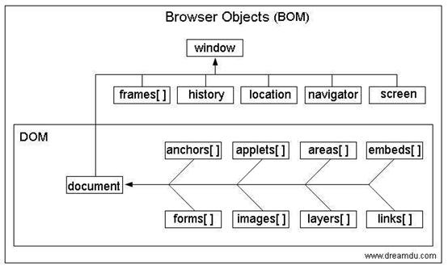

Window对象包含以下五大核心：document，screen，navigator，history，location。
一 document 文档
document包含了浏览器对标准DOM实现的所有方法和属性。
1，BOM和DOM的关系大致如下图：

这里是网上找的图。
二 screen
window.screen包含了用户屏幕的相关信息，比较有用的有四个属性,他们都返回以像素计的整数：
screen.width：屏幕宽度
screen.height：屏幕高度
screen.availWidth：屏幕可用宽度
screen.availHeight：屏幕可用高度
可用高度/宽度是减去了诸如窗口工具条之类的界面特征，典型的如windows系统的任务栏。
1 console.log(screen.width);//1920
2 console.log(screen.height);//1080
3 console.log(screen.availWidth);//1920
4 console.log(screen.availHeight);//1040,因为我在底部设置了始终显示任务栏
三 navigator
navigator.appCodeName:浏览器的代码名
navigator.appName：浏览器名称
navigator.appVersion：浏览器平台和版本信息
navigator.cookieEnabled：是否启用cookie
navigator.onLine：是否联网
navigator.platform：操作系统版本
navigator.language：系统语言
1 navigator.appCodeName;//"Mozilla"
2 navigator.appName;//"Netscape"
3 navigator.appVersion;//"5.0 (Windows NT 6.1; Win64; x64) AppleWebKit/537.36 (KHTML, like Gecko) Chrome/76.0.3809.100 Safari/537.36"
4 navigator.cookieEnabled;//true
5 navigator.onLine;//true
6 navigator.platform;//"win32"
7 navigator.language;//"zh-CN"
由于一些历史原因，大部分浏览器的appCodeName和appName都返回相同的值。
四 history
History.length:历史列表中元素个数
history.back()：后退
history.forward()：前进
history.go()：接受一个数字，跳转到数字指定的页面，0表示当前页
history.pushState(stateObj,null,url)：向历史列表插入一条记录（url必须同源）
方法接受3个参数，第一个是一个状态对象（包含一些数据），第二个是标题，但大多数浏览器都忽略了这个参数，所以一般传递一个null即可，第三个是url（必须是相同域名下的）。
它的功能是在当前页的历史记录后面插入一条新的记录，但当前页面不会被重载为新的url地址。新页面的history.state保存了状态对象的一个副本，这样我们通过第一个参数就可以轻松实现页面之间的数据传递了。
history.replaceState()：替换当前历史记录。用法和pushState一样。
这两个方法有一个相当重要的应用，那就是可以在不刷新页面的情况下修改浏览器的url地址。
1 //假如我们现在正在浏览一个网页，网址是：http://news.163.com
2 var obj = {name:"ren"};
3 console.log(history.state);//null
4 history.pushState(obj,null,"/domestic/");
5 /*这时网址变成了http://news.163.com/domestic/,但网页并没有任何变化。
6 刷新网页，页面将跳转至https://news.163.com/domestic/这个页面，并且在这里访问history.state的值，则变成了{name:"ren"}。再点击后退，将返回http://news.163.com页面*/
1 //假如我们现在正在浏览一个网页，网址是：http://news.163.com/domestic/
2 history.replaceState(null,null,"/world/");
3 /*这时网址变成了http://news.163.com/world/,但网页并没有任何变化。
4 如果这时我们在地址栏输入http://www.baidu.com,并访问它。再点击后退，这时你将发现，网页退回到了http://news.163.com/world/，而不是http://news.163.com/domestic/*/
详情请看MDN https://developer.mozilla.org/zh-CN/docs/Web/API/History_API
五 location
一个包含所有信息的完整URL地址包含以下要素（只有协议、域名和端口是必须的）：
https://news.sina.com.cn:8080/gov/xlxw/2019-08-23/ihytcern.html?page=123&set=true#name=1
a：双斜杠之前的协议
b：双斜杠后面的域名
c：冒号后面的端口
d：单斜杠之间的文档路径
e：最后一个斜杠后面的文档名称
f：问号之后的查询（参数）
g：井号之后的锚
1，属性
location.href：当前页面的完整URL
location.protocol：web协议
location.host/ location.hostname：主机/名（多数情况返回内容相同）
location.port：端口号
location.pathname：路径
location.search：查询，即？后面的部分
location.hash：锚，即#后面的部分
注意：井号后面的值不会传递给服务器，所以改变它不会重载页面，但会改变本地浏览历史记录。
1 //假设当前访问的页面url是"https://news.sina.com.cn:8080/gov/xlxw/2019-08-23/ihytcern.html?page=123&set=true#name=1";
2 location.href;// "https://news.sina.com.cn:8080/gov/xlxw/2019-08-23/ihytcern.html?page=123&set=true#name=1"
3 location.protocol;//"https:"
4 location.host/ location.hostname;//"news.sina.com.cn"
5 location.port;//8080
6 location.pathname;//"/gov/xlxw/2019-08-23"
7 location.search;//"?page=123&set=true"
8 location.hash;//"#name=1"
2，方法
location.assign(url)：加载给定url的新页面，会添加新的历史记录。
location.reload()：重载当前页面，有一个可选参数：ture表示直接从服务器加载，false表示从缓存加载。
location.replace(url)：加载给定url的新页面，但新页面不会向history中插入一条新纪录。